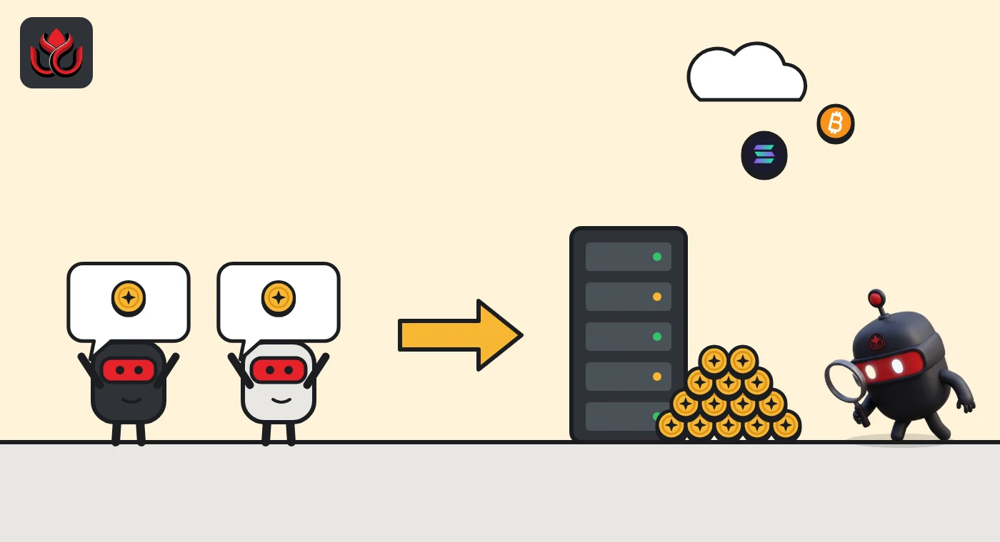
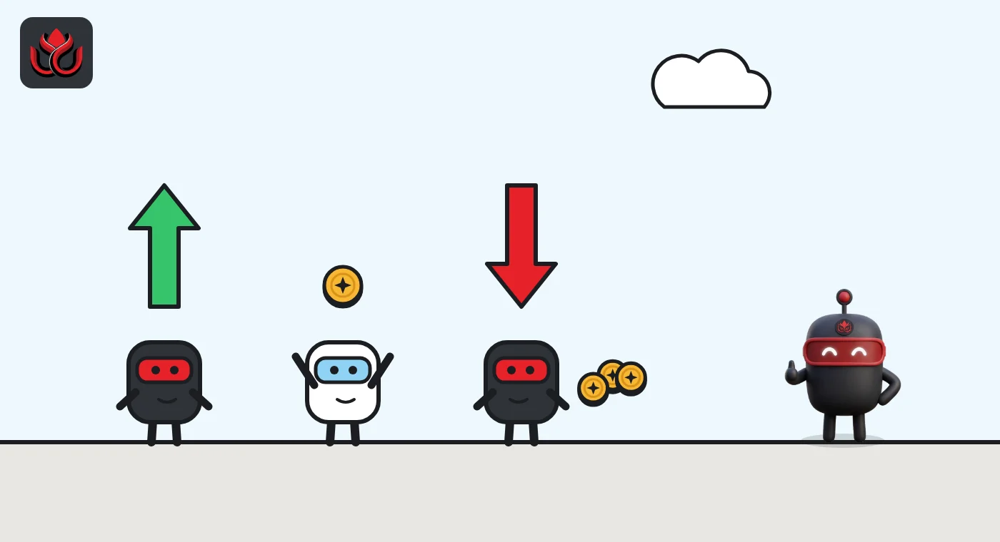

What is MEV? How sandwich bots profit from your swap, and how to cut the risk
MEV, or maximal extractable value, is the profit made by choosing which transactions go into a block and in what order. Some of it keeps prices in line across exchanges. Sandwich attacks take it straight out of ordinary traders' swaps.
Key points
- MEV is value captured by adding, leaving out or reordering transactions in a block, on top of the normal block reward and gas fees.
- A sandwich bot buys just before your swap and sells right after it. Your slippage tolerance sets how far it can push the price.
- Sending swaps through a private RPC hides them from mempool bots. On Ethereum, most blocks now come from specialist builders through MEV-Boost relays.
What is MEV in crypto?
MEV stands for maximal extractable value. Ethereum's developer documentation defines it as the most value that can be taken from block production beyond the standard block reward and gas fees. That value comes from three powers: putting a transaction in a block, keeping it out, or changing the order.
The term started as "miner extractable value" in the proof-of-work era, when miners decided the order of transactions. After Ethereum moved to proof of stake, validators took over that job, so the name changed to "maximal" while the tricks stayed the same.
Order matters because a blockchain runs transactions one after another. If two people try to buy the same cheap token, the one placed first gets the better price. Whoever controls the order can sell that position or use it.
Who actually extracts MEV?
In theory validators could take all of it. In practice, ethereum.org explains, much of it is found by independent traders called searchers. They run bots that scan blockchain data for profitable openings and then pay high fees to get their transactions placed where they need them.
Those fees are how validators get their share. In crowded trades such as DEX arbitrage, ethereum.org says searchers may hand over 90% or even more of their MEV revenue as gas fees, because a rival will outbid them if they keep too much.
Some bots are fully automated copycats. These "generalized front-runners" watch the mempool (the waiting room of unconfirmed transactions), copy any pending transaction that would make money, swap in their own address and resubmit it with a higher fee so it runs first.

What are the main types of MEV?
- DEX arbitrage. When two exchanges price the same token differently, a bot buys on the cheap one and sells on the pricier one in a single transaction. Ethereum's docs give an example where 1,000 ETH became 1,045 ETH by trading ETH and DAI between Uniswap and SushiSwap. It is the best-known and most competitive kind.
- Liquidations. Lending protocols let anyone close out a loan that falls below its collateral limit and pay that person a fee. Searchers race to be first. LC Insight's guide on how crypto liquidations work covers the borrower's side.
- Front-running. Copying or jumping ahead of someone else's profitable transaction, as the generalized bots do.
- Sandwich attacks. The one that hits regular users, explained below.
- NFT MEV. Being first in a hot mint or sniping a mispriced listing. Ethereum's docs call this an emerging area that is not always profitable.
How does a sandwich attack work?
A sandwich attack has three slices. A bot spots a large pending swap in the public mempool. It places its own buy just before that swap, which pushes the price up. The victim's swap then fills at the worse price. The bot sells right after, into the price the victim helped create.
The user ends up with fewer tokens than the screen suggested. Ethereum's documentation lists the harm plainly: increased slippage and worse execution on users' trades. It also notes that sandwiching is riskier for the bot than arbitrage, because the steps are separate transactions rather than one all-or-nothing trade.
The size of the slice is limited by the victim's slippage tolerance: the worst price the swap will accept before it cancels. A bot can only push the price up to that line. Set the line far away and the bot can take more.
Slippage settings in Uniswap's own guidance
percent of trade value
Sources: Uniswap Support, Uniswap blog. Examples only, not recommendations.

What are PBS and MEV-Boost?
Proposer-builder separation (PBS) splits block production into two jobs. Builders collect transactions and bundles from searchers and arrange them into the most profitable block. The proposer, the validator whose turn it is, simply picks the highest bid. Ethereum's docs say the goals include weaker incentives to rewrite past blocks for MEV and a fairer deal for small solo stakers.
Ethereum's base protocol does not yet include PBS. The working substitute is MEV-Boost, which Flashbots describes as open-source middleware that validators run to reach a competitive block-building market. Builders send blocks to relays, the relays pick the most valuable one, and the validator's client proposes it. Flashbots estimates that validators running it can raise staking rewards by more than 60%.
Ethereum's docs call the Builder API that MEV-Boost uses a temporary solution with higher trust assumptions, since validators and builders rely on relays acting honestly. A version built into the protocol, enshrined PBS (ePBS, EIP-7732), is a headline change scheduled for the Glamsterdam upgrade, the Ethereum Foundation's testnet announcement and roadmap page say. As LC Insight's Ethereum roadmap guide notes, Glamsterdam still has no mainnet date.
How can users reduce sandwich risk?
No setting removes MEV entirely, but two tools cut sandwich exposure.
- Private RPCs. An RPC is the server your wallet sends transactions to. A private RPC skips the public mempool, so bots cannot see the swap before it lands. Flashbots Protect, one such service, says transactions sent to its private mempool are hidden from front-running and sandwich bots, that failed transactions are not included and cost no fees, and that users can receive refunds if their transaction creates MEV. Some wallets and swap apps offer similar routing built in. Using one means trusting that operator with your transaction until it is included.
- Slippage tolerance. Uniswap's support page explains the trade-off: set it too low and the swap may fail; set it too high and you may receive fewer tokens than the preview shows. Uniswap's slippage guide also suggests checking pool depth and splitting large swaps.
Trade size matters too. A small swap in a deep pool leaves little profit for a bot to take after fees. A large swap in a thin pool is the easiest target.
Is MEV good or bad?
Both. Ethereum's documentation credits searchers with keeping prices in line across exchanges and with closing risky loans on time, which lending protocols depend on. Without them, DeFi would be less stable.
The same page lists the costs: worse prices for sandwiched users, gas bidding wars that raise fees for everyone, a risk that validators reorder or rewrite blocks when MEV is large, and pressure toward big staking pools that can afford better extraction. Private deals between traders and validators could also make the network more pay-to-play.
Uniswap's own design shows how much order matters to a DEX. LC Insight's Uniswap guide explains the pool pricing that arbitrage bots keep in line.
LC Insight analysis
This section is our reading of the facts above, not a statement of fact.
- We think the sandwich is the part of MEV that matters most to ordinary users, and it is also the most fixable. Private routing and sensible default slippage in wallets do more than any warning.
- The deeper risk sits in block building. A handful of builders and relays now stand between users and validators, and until enshrined PBS ships, the system depends on relays behaving.
- Private RPCs swap one risk for another. They hide trades from bots, but users must trust the operator with their transaction until it lands.
What's next
- Progress of ePBS and the Glamsterdam upgrade toward a mainnet date
- Wallets and swap apps turning on private routing by default
- Concentration among block builders and relays
Frequently asked questions
Is a sandwich attack illegal?
LC Insight is not aware of a general rule covering it, and it happens through normal transactions on public blockchains. Treat it as a market risk you manage with settings, not one you can report and reverse.
Does MEV exist on chains other than Ethereum?
Yes. Any chain where someone controls transaction order can have MEV. This guide uses Ethereum because its documentation describes the system in the most detail.
Does a private RPC cost extra?
Flashbots Protect says users pay no fees for failed transactions and can earn MEV and gas refunds. Other providers set their own terms, so read them first.
Who are searchers?
Independent traders who run bots to find MEV openings and pay high fees to get their transactions placed. Much of the fee goes to validators.
Disclaimer. This article is based on public information and the sources listed below as of the update time shown. It is for information only and is not investment, legal or tax advice. Figures may change as companies and authorities publish new data.